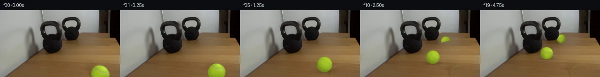
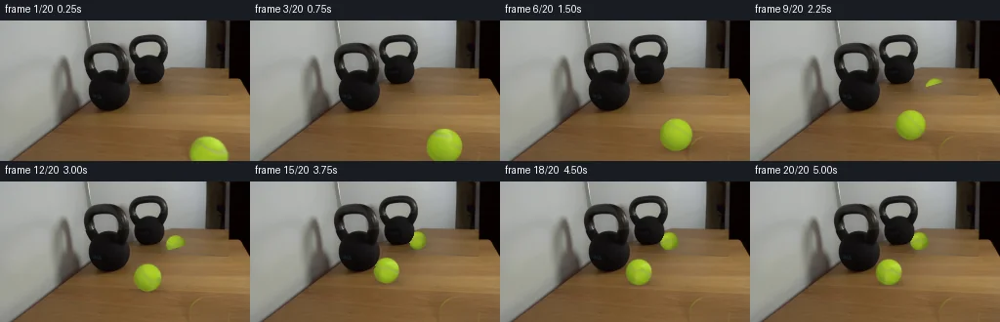
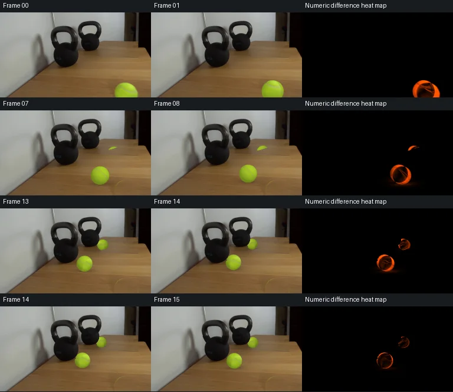

V0 · 初版
2026-11-05T16:51:55.669941+00:00 · RGB a762619c3749
![]()
Observable Generation Trace
把最终像素视频、Harness 冻结的每轮候选、真实工具事件和 Agent 自述放在同一页。可观测证据与模型自述分开标记，避免把“模型说它检查过”误当成真实工具调用。
![首帧]()
Static locked-off single-shot with fixed frame throughout filmed with constant framerate in real-time. The scene shows a realistic scientific demonstration. The scene only contains the described setup and actions. The 30lb kettlebell sits next to a mirror that reflects the kettlebell on a wooden table. The tennis ball rolls slowly towards the 30lb kettlebell next to a mirror and hits the kettlebell.
首帧显示在左侧播放器初始画面。Track 权限、隔离和 tensor 一致性来自 run manifest，而不是 METHOD.md。
默认勾选初版和最终版；可选其他版本一起同步播放。仅检查图更新的连续重复快照已合并，回退旧视频仍保留为一次修订。
Observable events
来源：events.jsonl + run manifest
此 Track 禁止读取输出图片。逐轮预览由外部 Harness 自动冻结，只用于事后审计，生成 Agent 当时看不到这些页面。
Frozen candidates
每张图来自该 round 的真实 00 / 01 / 05 / 10 / 19 帧

pixels 38d96405dc26a7a6 · code 5f08001612097da4
--- previous/generate.py
+++ current/generate.py
@@ -0,0 +1,248 @@
+"""Source-pixel continuation with local analytic sphere rotation and compositing."""
+from pathlib import Path
+import json
+import numpy as np
+from PIL import Image, ImageDraw
+from scipy.ndimage import gaussian_filter, binary_dilation, distance_transform_edt, map_coordinates
+from scipy.optimize import brentq
+from artifact_io import save
+
+ROOT = Path(__file__).resolve().parent
+H, W = 144, 256
+SOURCE = np.asarray(Image.open(ROOT / 'first_frame.png').convert('RGB'))
+F = SOURCE.astype(np.float64)
+Y, X = np.mgrid[:H, :W]
+START = np.array([213.4, 138.0])
+R0 = 19.5
+# The contact point is computed from the photographed kettle silhouette.
+KETTLE = (F.mean(2) < 45) & (X >= 90) & (X <= 133) & (Y >= 52) & (Y <= 92)
+DIST = distance_transform_edt(~KETTLE)
+AIM = np.array([138., 90.])
+R_AIM = 13.0
+
+def gap(p):
+ c = START + p * (AIM - START)
+ r = R0 + p * (R_AIM - R0)
+ return float(map_coordinates(DIST, [[c[1]], [c[0]]], order=1)[0] - r)
+
+P_CONTACT = brentq(gap, .90, 1.05)
+END = START + P_CONTACT * (AIM - START)
+R_END = R0 + P_CONTACT * (R_AIM - R0)
+DIRECTION = (END - START) / np.linalg.norm(END - START)
+PATH_LENGTH = np.linalg.norm(END - START)
+AXIS = np.array([-DIRECTION[1], DIRECTION[0], 0.])
+PROTECTED = binary_dilation(
+ ((F.mean(2) < 62) & (X >= 86) & (X <= 134) & (Y >= 20) & (Y <= 93)) |
+ ((F.mean(2) < 62) & (X >= 130) & (X <= 172) & (Y >= 12) & (Y <= 65)),
+ iterations=1)
+
+# Source ball removal: neighboring rows preserve the table's horizontal grain.
+# Color ramps use two clear table strips; residual grain comes from x-48.
+left = np.median(F[:, 181:191], axis=1)
+right = np.median(F[:, 240:251], axis=1)
+u = np.clip((X - 186.) / 59., 0., 1.)
+ramp = left[:, None, :] * (1-u[..., None]) + right[:, None, :] * u[..., None]
+row_blur = gaussian_filter(F, sigma=(0, 4.0, 0))
+residual = F - row_blur
+sample_x = np.clip(X - 48, 0, W-1)
+texture = residual[Y, sample_x]
+repair = np.clip(ramp + texture * .72, 0, 255)
+d0 = np.hypot(X-START[0], Y-START[1])
+remove = np.clip((R0 + 1.5 - d0) / 1.35, 0, 1)
+# Very soft, partly offscreen starting shadow.
+old_shadow = np.exp(-.5*(((X-218.)/24.)**2 + ((Y-155.)/6.5)**2))
+remove = np.maximum(remove, old_shadow*.58)
+remove[(Y < 115) | (X < 187) | (X > 250)] = 0
+remove[PROTECTED] = 0
+BACKGROUND = F*(1-remove[..., None]) + repair*remove[..., None]
+
+LIGHT = np.array([.34, -.52, .785]); LIGHT /= np.linalg.norm(LIGHT)
+
+def lighting(n):
+ return .66 + .34 * np.maximum(n @ LIGHT, 0.)
+
+# Estimate diffuse base albedo from non-seam source pixels.
+sx = (X-START[0])/R0
+sy = (Y-START[1])/R0
+sz = np.sqrt(np.maximum(0., 1-sx*sx-sy*sy))
+normals = np.stack([sx, sy, sz], axis=-1)
+albedo_source = F / np.maximum(lighting(normals)[..., None], .5)
+clean = ((sx*sx+sy*sy)<.72) & (Y < 143) & (Y > 127) & (X > 196) & (X < 233)
+clean &= (F[:,:,1] > F[:,:,0]*1.09) & (F[:,:,2] < 55)
+BASE_ALBEDO = np.median(albedo_source[clean], axis=0)
+
+
+def rotation(theta):
+ a = AXIS
+ skew = np.array([[0,-a[2],a[1]], [a[2],0,-a[0]], [-a[1],a[0],0]])
+ return np.eye(3)*np.cos(theta)+(1-np.cos(theta))*np.outer(a,a)+np.sin(theta)*skew
+
+
+def sphere_color(n, theta):
+ q = n @ rotation(theta) # Inverse rotation, row-vector convention.
+ lon = np.arctan2(q[...,0], q[...,2])
+ lat = np.arcsin(np.clip(q[...,1], -1, 1))
+ seam_dist = np.abs(lat - (-.28 + .35*np.sin(lon) - .12*np.cos(2*lon)))
+ seam = np.exp(-.5*(seam_dist/.037)**2)
+ border = np.exp(-.5*(seam_dist/.080)**2)
… diff truncated; 161 more lines …pixels 3f3a789ff96320b8 · code 6360a8a867efbb80
--- previous/generate.py
+++ current/generate.py
@@ -3,7 +3,7 @@
import json
import numpy as np
from PIL import Image, ImageDraw
-from scipy.ndimage import gaussian_filter, binary_dilation, distance_transform_edt, map_coordinates
+from scipy.ndimage import gaussian_filter, distance_transform_edt, map_coordinates
from scipy.optimize import brentq
from artifact_io import save
@@ -31,10 +31,9 @@
DIRECTION = (END - START) / np.linalg.norm(END - START)
PATH_LENGTH = np.linalg.norm(END - START)
AXIS = np.array([-DIRECTION[1], DIRECTION[0], 0.])
-PROTECTED = binary_dilation(
+PROTECTED = (
((F.mean(2) < 62) & (X >= 86) & (X <= 134) & (Y >= 20) & (Y <= 93)) |
- ((F.mean(2) < 62) & (X >= 130) & (X <= 172) & (Y >= 12) & (Y <= 65)),
- iterations=1)
+ ((F.mean(2) < 62) & (X >= 130) & (X <= 172) & (Y >= 12) & (Y <= 65)))
# Source ball removal: neighboring rows preserve the table's horizontal grain.
# Color ramps use two clear table strips; residual grain comes from x-48.
@@ -154,7 +153,7 @@
c = START + p*(END-START)
r = R0 + p*(R_END-R0)
theta = PATH_LENGTH/(R0-R_END)*np.log(R0/r)
- squash = .975 if i == 14 else 1.
+ squash = 1.
else:
# A 30-lb fixed obstacle dissipates most of the slow ball's energy.
offsets = {15:1.8,16:2.65,17:2.95,18:3.00,19:3.00}
@@ -231,7 +230,7 @@
kettle_and_reflection_pixels_fixed=True,fixed_room_pixels_identical=True,
protected_pixel_count=int(PROTECTED.sum()),contact_frame=14,
contact_time_seconds=3.5,contact_gap_pixels=rows[14]['kettle_gap'],
- contact_center=rows[14]['x':'y'] if False else [rows[14]['x'],rows[14]['y']],
+ contact_center=[rows[14]['x'],rows[14]['y']],
contact_radius=rows[14]['radius'],final_hold_identical=True,
changed_pixels_per_transition=changes.tolist(),
mean_absolute_rgb_change=differences.mean(axis=(1,2,3)).tolist(),pixels 3f3a789ff96320b8 · code 6360a8a867efbb80
No generate.py text change in this frozen round.
Final visual checks
Harness 保存的最终产物


Agent claims
以下文字由生成 Agent 撰写，不等同于工具证据
The input is a 256 × 144 RGB photograph. The view is locked. A warm wooden tabletop occupies the lower and right parts of the frame. A pale wall is on the left; a mirror behind the kettlebell contains its smaller reflection. The heavy black kettlebell has a handle around x=88–130, y=23–62 and a body around x=91–133, y=54–93. Its reflected handle/body occupy approximately x=133–171, y=15–65. The kettle, its reflection, room, camera, and lighting must stay fixed.
The yellow-green tennis ball is partially cropped by the bottom edge. Its measured green support is x=195–232, y=119–143. Estimated sphere center is (213.5, 138.2), radius 19.8 pixels. Its top is bright, the lower/left surface darker, and a curved seam crosses its upper visible surface. A soft contact shadow lies to the lower/right on the table. The ball is the only moving physical object. Background behind its original position has to be inferred from adjacent wooden pixels.
The planned contact center is approximately (139, 91), radius 14 pixels, tangent to the kettle's lower-right body near (127, 83). Perspective makes the approaching ball smaller. A faint, smaller reflection can enter the mirror during the latter part of the approach; it must be clipped to the mirror footprint and leave the reflected kettlebell unchanged. Mirror projection is inferred from the visible kettle/reflection pair, rather than calibrated from unavailable camera information.
Frame 00 is the exact input, with no modification. Times below are sample times; twenty samples fill a five-second playback interval.
| Frame | Time (s) | Event |
|---|---|---|
| 00 | 0.00 | Exact original; ball center roughly (213.5,138.2). |
| 01 | 0.25 | Begin slow roll diagonally left/back; center around (207,134). |
| 02 | 0.50 | Continue roll; original footprint starts clearing. |
| 03 | 0.75 | Center around (195,126); contact shadow follows. |
| 04 | 1.00 | Center around (189,123); sphere turns naturally. |
| 05 | 1.25 | Center around (183,119); radius about 17.5. |
| 06 | 1.50 | Center around (177,115); constant world motion with perspective. |
| 07 | 1.75 | Center around (172,112); kettle remains stationary. |
| 08 | 2.00 | Center around (167,108); small reflected ball may begin appearing. |
| 09 | 2.25 | Center around (162,105); rolling seam advances. |
| 10 | 2.50 | Center around (157,102); approach continues. |
| 11 | 2.75 | Center around (152,99); reflection follows the same sphere orientation. |
| 12 | 3.00 | Center around (148,96); closing the remaining gap. |
| 13 | 3.25 | Center around (143,93); just before contact. |
| 14 | 3.50 | Contact at roughly (139,91); minimal compression, no kettle displacement. |
| 15 | 3.75 | Low-energy rebound, approximately 2 pixels toward the foreground/right. |
| 16 | 4.00 | Rebound slows; ball stays close to kettle. |
| 17 | 4.25 | Approximately 3-pixel total separation; almost stopped. |
| 18 | 4.50 | Settled ball, consistent sphere and contact shadow. |
| 19 | 4.75 | Hold final state, fixed camera and kettle. |
Use only local Python/Pillow/NumPy/SciPy pixel operations. Repair the starting ball footprint using neighboring table color/texture, reconstruct the source visible hemisphere, extrapolate its hidden surface, rotate a shaded sphere analytically, and composite antialiased sphere masks and soft contact shadows. Do not use external models, rendering engines, reference assets, or image inspection tools. Later checks will be numeric: source equality, tensor/PNG equality, silhouette/trajectory/contact measurements, finite arrays, fixed scene pixels, and temporal differences. Contact sheets will be generated as required artifacts but not visually reviewed.
The final perspective endpoint was refined to radius 13.104 pixels (rather than the provisional 14), with center (139.212,90.771). A distance transform of the source kettle silhouette places contact exactly at frame 14. The rational perspective trajectory starts at the measured (213.4,138.0), radius 19.5; its projected increments decrease during the approach. A 3-pixel rebound completes by frame 18. The second generation removes an unnecessary one-pixel dilation of the stationary-object protection mask and drops symmetric compression, which improves the rendered touching edge while preserving source kettle pixels. No output image was visually inspected.
This is a local pixel-based continuation of the supplied photograph, using Python, NumPy, SciPy, and Pillow. It uses no external model, network, rendering engine, additional scene input, or subagent. The attached initial frame was the visual scene reference. All generated outputs were inspected only by local code and numeric checks; the generated contact sheets were not visually reviewed.
The source photograph is retained as the fixed background. A circular mask removes the original partly cropped tennis ball. The missing wood is synthesized with row-wise color interpolation between adjacent clear table strips, plus horizontal grain residuals sampled 48 pixels to the left. A soft inferred starting shadow is also repaired. The repair contains no remaining yellow-green ball pixels according to the numeric color test.
The moving ball is rendered as an antialiased mathematical sphere. Its visible front hemisphere samples the input tennis ball, with approximate directional lighting divided out to recover diffuse color. Missing lower-surface pixels use the lowest available source row. The unseen rear hemisphere uses the measured felt color, subtle deterministic texture, and an inferred curved seam. The source hemisphere and inferred surface are blended near their boundary. A rotation matrix turns the sphere along the rolling direction; the angular displacement integrates projected distance over projected radius. Four subpixel coverage samples soften the silhouette. Approximate diffuse lighting is reapplied in the fixed room direction, and a soft elliptical contact shadow follows the ball.
A rational perspective interpolation shrinks the ball from radius 19.5 to 13.104 pixels while its center moves from (213.4,138.0) to (139.212,90.771). Its screen motion slows as it moves farther away. A distance transform of the source kettlebell's dark body determines the collision endpoint. At frame 14, time 3.5 seconds, center-to-silhouette distance equals the radius to floating point precision. No visible compression is modeled for this slow collision. The ball then rebounds 3 pixels with decreasing increments and stops at frame 18. Frames 18 and 19 are identical. The heavy kettlebell stays fixed.
A smaller, dimmer reflection is projected from the moving sphere using the approximate mapping x'=0.74x+68, y'=0.62y+3.7, radius'=0.70 radius. Its horizontal surface coordinates are reflected. It is softly blurred and clipped to an inferred mirror polygon. The mapping and mirror footprint are estimates based on the source kettle/reflection pair; they are not a calibrated camera reconstruction. Source dark pixels belonging to the real and reflected kettlebells are protected from compositing.
generate.py: reproducible generator, artifact writer, numeric validation.pixels.npz: key pixels, uint32 shape (144,256,20), packed 0xRRGGBB, axes height/width/time.frames/00.png through frames/19.png: 20 RGB frames at 256 × 144.index.html: standalone player containing the first frame and exact delta packets; 4 fps, five-second playback interval.inspection.png: eight sampled frames with labels, generated without visual inspection.transition_check.png: four before/after frame pairs and their numeric difference heat maps.OBSERVATION.md: observations and twenty-frame event plan written before the generator, followed by numeric refinements.trajectory.json: frame times, centers, radii, sphere rotations, and collision gaps.validation.json: generator's machine-readable integrity and temporal checks.The generator verifies the exact initial RGB frame, all 20 PNGs against their uint32 tensor planes, tensor dimensions and dtype, unchanged protected kettle/reflection pixels, unchanged fixed room regions, monotonic approach/shrinkage, the contact endpoint, and the identical final hold. There are 3,500 protected source pixels. A separate local check reconstructs all 20 frames from the HTML player's embedded base64/delta data and compares them exactly to the tensor. The final ball's detected green surface is one pixel from the dark kettle silhouette, consistent with adjacent antialiased touching surfaces at this resolution.
These are numeric checks and an approximate physical/pixel construction. They do not establish a visually reviewed or fully calibrated three-dimensional simulation.
Run python generate.py from this workspace to reproduce the sequence and generated artifacts.